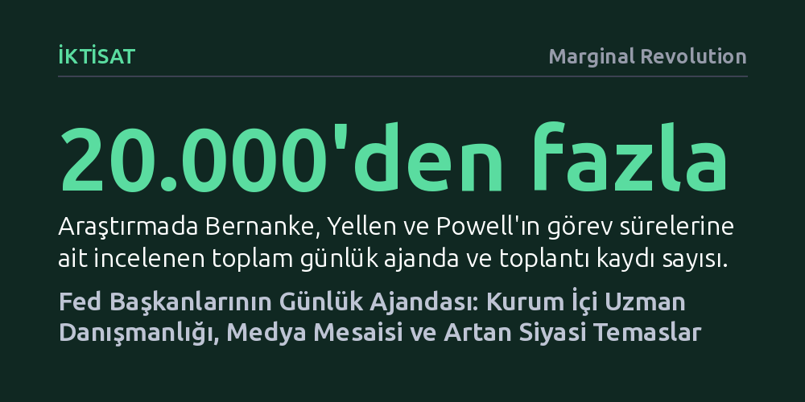

IKTISAT · Marginal Revolution · 2026-10-26
Fed başkanlarının 20 binden fazla takvim kaydını inceleyen yeni araştırma, başkanların mesailerinin üçte birini kurum içi iktisatçılara ayırdığını gösteriyor. Çalışma ayrıca Jerome Powell döneminde siyasetçilerle temasın belirgin şekilde arttığını ve ajandaların makroekonomik dalgalanmalara göre biçimlendiğini ortaya koyuyor.
Para politikasının sadece soyut formüllerle değil; merkez bankası başkanlarının zamanını iktisatçılar, medya ve siyasetçiler arasında nasıl paylaştırdığıyla şekillendiğini gösteriyor.

İktisat ve yönetim bilimlerinde liderlerin dikkat ve zamanlarını sınırlı kaynaklar karşısında nasıl tahsis ettikleri, kurumsal başarının temel belirleyicilerinden biri kabul edilir. Ulusal Ekonomik Araştırma Bürosu (NBER) bünyesinde Thomas Drechsel ve Dali Tsakadze tarafından hazırlanan yeni çalışma, bu soruyu küresel finans sisteminin merkezinde yer alan ABD Merkez Bankası (Fed) liderleri üzerinden ele alıyor. Araştırmacılar; Ben Bernanke, Janet Yellen ve Jerome Powell’ın görev dönemlerini kapsayan ve 20.000’den fazla günlük ajanda kaydını içeren benzersiz bir veri seti inşa etti.
Oluşturulan bu kapsamlı veri tabanı, kapalı kapılar ardında şekillenen para politikası süreçlerinin perde arkasını aydınlatıyor. Çalışma yalnızca bu üç başkanı incelemekle kalmıyor; Alan Greenspan gibi önceki başkanların arşivlerde bulunan takvimlerini de dahil ederek bulguları tarihsel bir bağlama oturtuyor. Böylece modern merkez bankacılığının son çeyrek asırdaki kurumsal dönüşümü nesnel zaman kayıtları üzerinden izlenebilir hale geliyor.
Takvim verilerinin ortaya koyduğu ilk temel örüntü, tüm Fed başkanlarının kayıtlı görüşmelerinin yüzde 30’undan fazlasını kurum içi personele ayırmış olmasıdır. Bu yüksek oran, kamuoyunda genellikle tek bir figürün kararı gibi algılanan para politikasının aslında yüzlerce profesyonel iktisatçı ve araştırmacının kolektif mutfağında piştiğini belgeliyor. Başkanlar, karar aşamalarında teknik analiz ve modellemelere dayalı uzman girdisine hayati bir zaman ayırıyor.
İkinci çarpıcı bulgu ise medya ilişkilerinde yaşanan köklü dönüşümde yatıyor. Başkanların basın ve kamuoyu temsilcileriyle geçirdiği süre, 2008 küresel krizini yöneten Ben Bernanke döneminde belirgin biçimde sıçrama yaptı ve Jerome Powell döneminin sonuna kadar önemini korudu. İletişimin ve beklenti yönetiminin doğrudan bir para politikası enstrümanı haline gelmesi, başkanların ajandasında basına ayrılan payın kalıcılaşmasını sağladı.
Araştırmanın en dikkat çekici bulgularından biri, Jerome Powell’ın yasa yapıcılarla (Kongre üyeleri ve siyasetçilerle) yaptığı görüşmelerin selefleri Bernanke ve Yellen’a kıyasla dramatik şekilde artmış olmasıdır. Powell’ın siyasi aktörlerle bu denli yoğun temas kurması, merkez bankasının karar süreçlerini siyaset kurumuna anlatma ve savunma ihtiyacının giderek arttığını gösteriyor.
Bu eğilim, geleneksel merkez bankası bağımsızlığı kavramının günümüzün kutuplaşmış siyasi ortamında nasıl evrildiğine ışık tutuyor. Para politikasının geniş kitleleri doğrudan etkileyen sonuçları arttıkça, başkanın zamanının önemli bir kısmı siyasi karar alıcılarla diplomasi yürütmeye, Kongre denetimine hazırlanmaya ve kurumsal meşruiyeti korumaya ayrılmak zorunda kalıyor.
Çalışma, başkanların zaman tahsisini sadece uzun vadeli eğilimler üzerinden değil, aynı zamanda iş çevrimleri frekansında da inceliyor. Elde edilen bulgular, makroekonomik çevredeki şok ve dönüşümlerin başkanların günlük ajandasına anında yansıdığını ortaya koyuyor. Enflasyon dalgalanmaları, resesyon tehditleri veya finansal istikrarsızlık anlarında başkanların hangi aktörlerle ne sıklıkla bir araya geldiği dinamik biçimde değişiyor.
Sonuç olarak bu araştırma, merkez bankacılığının yalnızca faiz modelleri ve ekonometrik denklemlerden ibaret olmadığını somutlaştırıyor. Bir merkez bankası başkanının performansı, kıt olan zaman ve dikkat kaynağını kurum içi analistler, finansal piyasalar, medya ve siyaset kurumu arasında nasıl dengelediğiyle doğrudan şekilleniyor.